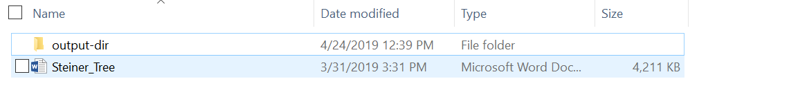

Clone the repository in a convenient location on your computer
To install mammoth run the following command
“pip install mammoth”
Requirements and Recommendations for documents to process properly:
Mammoth can process the following word document procedures correctly:
Headings
Lists
*Tables
Footnotes and endnotes
Images
Bold, italics, underlines, strikethrough, superscripts and subscripts
Links
Link breaks
We find that mammoth has difficulties processing and formatting tables, to avoid incorrect formatting and issues, it is recommended that when possible, a screenshot of tables be taken and used rather than the table itself.
ALL images must be in a PNG File format, X-EMF Files will not display properly
Mammoth is a great tool to convert and is far better than any other convertor we’ve found, however it isn’t perfect and requires quite a bit of dumbing down of a document
Once the proper changes have been made to the document format, place it into a folder, and make sure that within the folder there is another folder that is titled output-dir

In this example, the document desired to be processed is Steiner Tree, and when mammoth processes it, the output will be put into output-dir along with all of the images used in the mammoth document
Converting Word Documents to HTML Files
In order to properly use images inline the following command must be used to convert the document
“mammoth document.docx --output-dir=output-dir”
This will convert the document to html, and place it in the output-dir along with all images used inside of document.docx
Mammoth allows other ways to modify documents, and the steps to convert documents with
additional features can be found in the READ.me of the mammoth github page
Uploading the HTML Document to the website
The SUSA website requires a template above the HTML Document in order to correctly show the document.
Furthermore add the endblock to the bottom of the document which is:
{% endblock %]
The header can be added to the Mammothed document in 1 of 2 ways
Manually copy and pasting the template to the top of the Mammothed document is one option
To automatically enter the header, use the Pandoc universal document converter which can merge documents
To merge the documents run the command: pandoc -s template.html mammothed.html -o output.html
Unfortunately, this will output a merged document, however output.html will automatically put a header, make sure to delete the area before the template, and also the paragraph symbols around the template
Also please delete the </html> at the bottom of the document before you add the endblock above
Now that the template has been added, it is time to upload it to the desire location within the USA-Website github repository. Make sure that the outputted HTML document, does not leave the folder with all of its images, because it will then not display the images correctly
The following link explains how to properly upload the output to the website